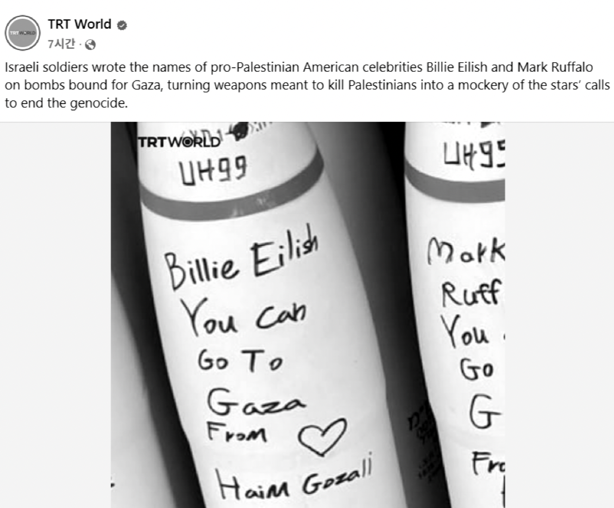

- Prologue
꿈을 떠나보내는 중 일지도.
배우를 꿈꾸었던 나는 가족들의 반대에 울며 겨자 먹기로 연출 입시를 하게 되었다. 연기는 안 된다길래 시작했던 연출은 그다지 흥미롭지 못했다. 그런 생각을 많이 했던 것 같다. 아, 나는 이 지루함을 견딜 만큼 연극을 영화를 좋아하지 않는구나. 내 꿈은 그다지 간절하지 않구나. 몇 개월간 학원을 다니며 친구들과 이야기하고 또 실기를 보러 다니며 계속 느꼈다.
그래서 1월이 되고 2월의 끝자락까지 합격 소식을 기다리면서 어렵지 않게 다른 미래를 그렸었다. 학교를 가지 않고 오디션을 보러 다니고 단역 알바를 하는 그런 미래. 근데 그런 미래조차도 나에겐 너무 먼 미래였던 모양이다. 그렇게 아무것도 하지 않으며, 꿈을 잊으며, 아마도 포기하며 시간을 흘려보냈다. 6개월의 쉼 이후, 건강해진 몸과 마음으로 더 큰 자유를 누리기 위해 대학생이란 신분을 취득하고자 하는 의지를 갖게 됐다.
스페인어라는 전공을 택하여 대학에 들어왔다. 기대 하나 없었던 대학 생활이 나름 재밌다. 원래도 좋아했던 언어 공부다 보니 전공마저도 마냥 즐겁게 공부했다. 다른 미래를 상상할 수 있게 됐다. 놓지 못해 10년 넘게 안고 끙끙 앓던 꿈들을 하나둘 내려놓는 중이다.
올해의 공짜 활동은 꿈을 내려보내는 과정의 기록이 된 것 같다. 놓고 싶지 않아서 시작한 연극에 대한 사유였는데, 사실 나에게 필요한 것은 내려놓는 것에 대한 자기 확신이었을지도 모른다.
어쩌면 시작과 끝이 다를 <연극에 대한 사유>다.
- <스크루테이프> 감상비평
영국 작가 C.S.루이스의 <스크루테이프의 편지>를 원작으로 하는 연극이다. C.S.루이스는 아일랜드 출신으로 옥스퍼드 대학에서 영문학을 가르친 명사이자 영국 문학의 대표적인 작가이다. 그는 기독교 집안에서 태어났으나 신앙을 버리고 완고한 무신론자가 되었다.
(중략)
이야기 속 악마 웜우드는 자신이 맡은 환자인 인간을 원수(신)에게서 멀어지게 하는 임무를 맡고 있다. 웜우드의 삼촌이자 선배인 3명의 스쿠루테이프들은 웜우드에게 메시지를 전달하며 인간의 본성과 생애주기, 가족관계, 몸과 영혼의 상탸 등을 이용해 신에게서 구원을 받을 수 없도록 하는 다양한 전략과 전술을 구사한다. 스쿠루테이프들은 웜우드를 통해 스스로를 속이는 거짓된 삶, 겸손을 가장한 교만함, 두려움을 이용한 무기력함, 사랑과 분리된 성욕, 자신을 숭배하게 하는 이기심 등 인간의 영혼을 잠식시키려 하지만 처음 생각했던 것과 달리 그들의 계획인 번번히 무너지면서 도리어 분열과 상실로 치닫게 된다. 이러한 과정을 유쾌하게 담은 연극이다.
(중략)
극의 마지막에 달아서는 상황이 급박해지고 배우들의 감정도 극에 치솟았다. 극의 마지막 연출도 기억에 남는다. 빨간 조명 속에서 좌절한 채로 무대를 떠나는 세 스크루테이프들과 그 뒤로 무대의 벽에 비치는 우크라이나 전쟁의 참담한 모습들이 관객들이 연극 속의 이야기를 현재의 사건에 대입하게 시켰다. 참담한 현재 상황의 모습을 보면서 이 연극이 말하고자 하는 것은 무엇일까 생각해보았다. 우리의 삶 속 우리 곁에 존재하는 악마들, 우리는 어떻게 살아가야 하는가. 사실 종교적인 성향이 강한 이야기였다. 하지만 오로지 종교적으로만 해석되지는 않았다. 우리 모두가 공감할 수 있는 이야기였고 그렇기에 스스로의 삶에서 자신을 찾아보게 되었다.
위 비평문은 내가 연극영화과 입시를 준비하던 시절 작성한 글이다. 실기 학원 선생님이 시키는 대로 매달 한두 개의 연극을 보고 비평문을 작성하여 발표하고 피드백을 받았었다. 연출 전공을 준비했었다 보니 연극의 내용보단 연출적인 부분에 집중했었고, 그렇기에 비평문에도 극의 내용에 관한 것은 많이 남아 있지 않았다. 하지만 내가 이 연극을 다시금 떠올리고 그 내용에 대한 기억을 되짚기 시작한 것은 인터넷에서 우연히 본 한 사진 때문이다.

- 연극 <스크루테이프>를 관극한 후 남긴 비평
2023년 6월 15일
이스라엘 군이 가자지구에 쏠 미사일에 팔레스타인을 지지한다는 의사를 밝힌 연예인들의 이름과 그들에 대한 조롱을 마치 초등학생이 교실 벽에 낙서하듯이 적어 놓은 사진이다.
2년 전 시작된 이 전쟁은 아직까지도, 너무나 끔직하게, 수많은 목숨을 앗아가고 있다. 하마스와 이스라엘의 오랜 국지전의 연장으로 시작된 ‘이팔 전쟁’은 비인도적인 행위의 지속으로 이어지고 있다. 2025년 1월 통계에 따르면 가자지구 내 사망자는 약 4만 명, 부상자는 11만 명이 넘는 것으로 집계되었다. 24년 UN의 분석 결과에 따르면 사망자의 70%가 여성과 어린이인 것으로 밝혀졌다. 정말 무고한 생명들이 너무나 많이 희생되고 있다. 아무 이유도 없이 아이들은 팔과 다리를 잃고 가족과 집을 잃었다. 이게 과연 2025년에 일어나고 있는 일들이 맞을까? 이렇게 수많은 희생자가 나오는 상황에도 불구하고 전쟁은 지속되고 비인도적인 행위는 날이 갈수록 더해져 간다.
이 전쟁을 주도하는 인간들과 위 사진 속의 만행을 저지른 군인들이 이 연극 속의 악마 같다고 느꼈다. 동시에 나는 할 수 있는 게 없다며 잠깐의 죄책감만 느끼고 뉴스 채널을 돌리는 나 스스로에게도 회의감을 느꼈다.
연극 <스크루테이프>가 상연될 당시 우크라이나 – 러시아 전쟁이 막 시작되었던 시기였다. 이 연극을 관극할 당시 나는 무대 뒤 스크린에 나오는 전쟁의 참혹한 모습들을 보며 눈물을 흘렸다. 스크린에 나오던 어린아이의 모습이 마음을 아프게 했다. 잠깐의 죄책감과 무력감을 느꼈다.
연극은 보이지 않는 것을 보이게 한다. 이상은 무엇인가 물음을 던지는 최후의 공론장 그것이 연극이라고 말한다. 연극은 단순히 극으로만 끝나지 않는다. 주위를 그리고 스스로를 돌아보게 만드는 장치가 되기도 한다.
하지만 그게 다였다. 나와는 너무 먼 얘기여서 연극을 보고 나와서 ‘잠깐’. 우크라이나의 피해를 복구를 돕는 자선단체에 소액의 기부를 하긴 했지만, 그마저도 한번이 다였다. 전쟁은 계속됐고 또 다른 전쟁이 몇 개월 후 발발되었다. 가끔 뉴스를 보며 그 ‘잠깐’의 스쳐 가는 감정들을 느꼈지만 그게 다였다.
내가 경험한 ‘잠깐’ 스쳐 가는 감상과 전쟁에 대한 일시적인 관심도 연극이 이끌어 낸 효과라고 볼 수는 있을 것이다. 그렇다면 이것이 내 삶의 자양분이 될 수 있는 것인가? 잠깐뿐인 그 효과가 우리 삶에 의미있는 것들이 맞긴 할까? 연극이 우리 삶에 자양분이 될 수 있게 만들어 주는 제의는 무엇일까? 만약 그렇다면 내가 본 이 연극이 충분히 형식을 갖춘 제의를 가진 연극인 걸까? 내가 느낀 잠깐의 감정에서 멈추지 않고 더 나아가려면 무엇을 해야 할까? 그 무엇이 연극으로 가능한 것인가? 연극은 무엇이며, 연극이 만드는 영향은 무엇이 있을까?
수많은 물음이 생겼다. 질문들에 대해 답을 찾아보자.